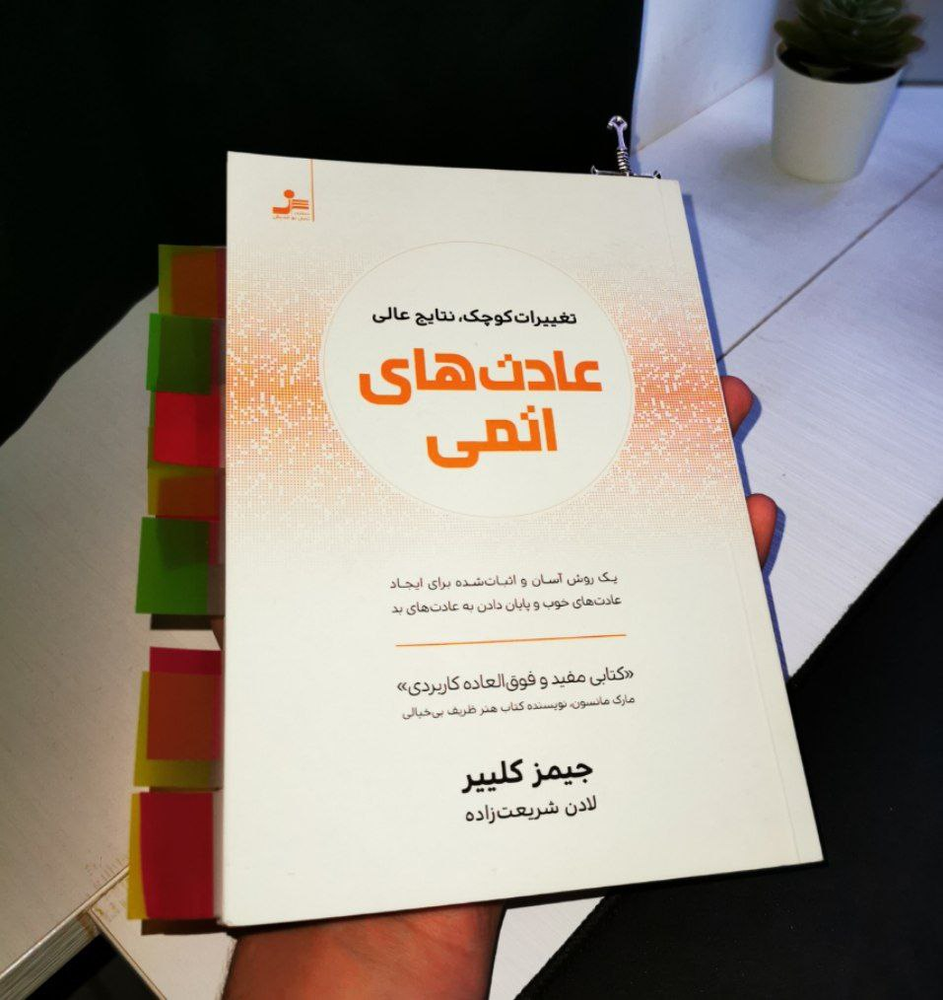

Welkom bij mijn portfolio!
Mijn naam is Emad Hajiabadi
Ik ben student Software-developing eerste jaar
op het Da Vinci college.
ik ben 18 jaar oud en mijn afkomst is Iran, ik woon ruim
5 jaar in Nederland.
Waarom deze opleiding?
Zoals gezegd doe ik de opleiding Software-developing en de reden dat ik
hiervoor heb gekozen is dat ik al jaren lang met computers bezig ben geweest en
sinds mijn 13de-14de was ik altijd bezig met nieuwe softwares te ontdekken
zoals adobe-illustraitor, adobe premiere pro, wondershare filmora etc...
of software's als Unity of leren van Python, daarom kon ik de basis lesstof goed
begrijpen omdat ik al ervaring had met Python. We hebben hele leuke opdrachten met
Python gemaakt
zoals een Pizza calculator, lootje's verdeler, een simpele rekenmachine etc...
en er zijn een paar op deze website te vinden.
Mijn plan
Ik vind deze opleiding super leuk en ik zie mijn toekomst in deze gebied.
Ik ben
van plan om in een bedrijf te gaan werken als programmeur en na
paar jaar
mijn eigen weg op gaan en als freelancer werken.
Mijn ervaring
Ik heb 70 uur stage gelopen bij Media Markt Hoogcatrijne toen ik op 4de klas
en
ik heb als multifunctionele kracht(barista,bediende,barman,afwasser) bij een
italiaanse resturant gewerkt wat ik heel leuk vond. Deze ervaringen heb ik veel
van
geleerd, vooral hoe belangrijk samenwerken en communicatie zijn en hoe
ik daarin
beter kan worden.

Mijn vrije tijd
In mijn vrije tijd doe ik meestal video editen(voor me zelf) of soms
boeken lezen of schaken. In tegenstelling met vroeger, game ik niet zo vaak
meer of beter te zeggen helemaal niet. Ik probeer om in mijn vrije tijd
ook nieuwe dingen te leren of trainen.
Deze boek hiernaar heet "Atomic habits", echt een leuke boek
en ik lees het in het Perzisch(mijn moedertaal) om het beter
te kunnen begrijpen.